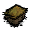
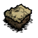
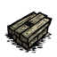

{kind=link}


Turfs are in-game Items that represent chunks of the Biomes' soil. All ground tiles (except Roads/Trails, Sticky Webbing, and already dug and barren dirt tiles) can be dug up using a Pitchfork to acquire a Turf item and reveal the bare ground underneath. Each type of Biome produces a different Turf item when dug up (see below). Turf items can be placed on bare dirt tiles to change the ground's appearance. Digging up the ground in a Biome has no effect on the creatures residing there. Turf cannot be used as fertilizer.
Turf makes a good fuel, burning for 45 seconds in a Campfire and 90 seconds in a Fire Pit.
Here is a gallery of the turfs.
These items are naturally generated above ground in a world, and are all obtained by using a Pitchfork (except for Sticky Webbing, which cannot be obtained).
| Item |
|
|
|
|
|  |  |
|---|---|---|---|---|---|---|---|
| Name | Forest Turf | Grass Turf | Marsh Turf | Rocky Turf | Savanna Turf | | |
| Biome | Forest | Grasslands | Marsh | Rockyland | Savanna | | |
These items are naturally generated in the Caves of a world, and are obtained by using a Pitchfork.
| Item | 
| 
| 
| 
| 
| ||
|---|---|---|---|---|---|---|---|
| Name | Mud Turf | Guano Turf | Slimey Turf | Fungal Turf | Cave Rock Turf | ||
| Biome | Near Sunken Forest | Rocky Plains & Stalagmite Biome | Near Sunken Forest | Mushtree Forest |
These items are typically easier to craft than to find throughout the world, as they appear only under specific circumstances, but if found, they can be obtained from the ground by using a Pitchfork.
| Item |  | 
| 
| 
| ||
|---|---|---|---|---|---|---|
| Name | Wooden Flooring | Cobblestones | Carpeted Flooring | Checkerboard Flooring |
| Turfs | |
| Surface Turf | Forest Turf • Grass Turf • Marsh Turf • Rocky Turf • Savanna Turf |
| Cave Turf | Mud Turf • Guano Turf • Slimey Turf • Fungal Turf • Cave Rock Turf |
| Craftable Turf | Wooden Flooring • Carpeted Flooring • Checkerboard Flooring • Cobblestones |
| Related | Sticky Webbing • Pitchfork |